Test panel
LAB_PANEL · Two-axis table of test items × input columns
What is a Test panel?
- 1.1Adding a field and the property panel layout
1.1Adding a field and the property panel layout
Overview
Test panel (LAB_PANEL) is a table built on two axes: test items × input columns. Rows are test items (glucose · WBC …), and columns are the values collected the same way for every item (Result · Flag · Clinical significance). The biggest difference from the table (table type) and the field group is that it comes with a setup you can use right after adding it — other containers show only an empty notice, but a Test panel is created with one glucose item and three columns already filled in.
Screen guide
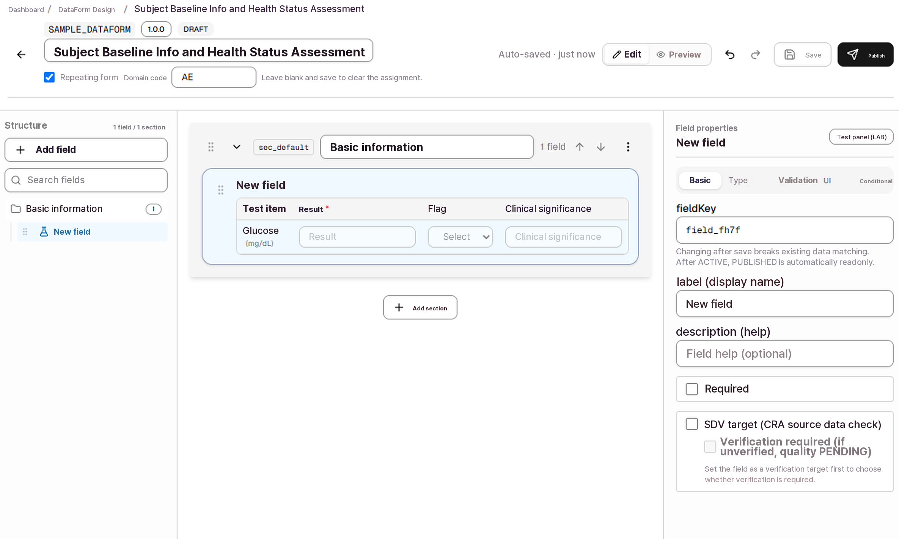
[+ Add field] — Specify the type here to create the field.
The new field is added to the structure tree. Its icon is a test tube.
The table is already drawn on the WYSIWYG canvas — one row, Glucose (mg/dL), and the columns Test item · Result* · Flag · Clinical significance. Use this setup as is or change it in the Type settings tab. Ch. 3
fieldKey — The key under which the whole table is stored. Separate keys are not created per test item or per column. 2.1
label (display name) · description (help) — The name and supporting description shown above and below the table. 2.1
Required — Covered in 2.2.
SDV target — Covered in 2.3.
Type badge “Test panel (LAB)” — The type of the selected field. It cannot be changed after the field is added.
5 property tabs — Basic · Type settings · Validation · UI · Conditional. Chapters 2–6 of this manual correspond to these tabs.
The area below SDV is empty. AE semantic role and Allow not-measured declaration, which other types have, are not shown at all for a Test panel — because the value spans several rows, those two features do not apply. 7.2
Precautions
Must check Data corruption · Form cannot be completed
- • The default setup is an example, not a standard. The single “Glucose” item is a seed that shows the layout — be sure to replace it with the test items you will actually collect. 3.3 · 3.4
- • ⛔ The recorder cannot add rows. Unlike the table (table type), rows are fixed to the test items set by the author — you must include every item to be collected. 3.4 · 7.1
- • The type cannot be changed after the field is added, and after publishing (PUBLISH) the structure itself cannot be changed. If you chose the wrong type, delete the field and add it again.
Easily misunderstood behavior
- • Normal ranges are not entered on this screen. Because they differ by site · sex · age, they are authored separately on the “LAB normal ranges” screen in the left menu. 3.2 · 3.7
Basic tab — name · required · verification target
- 2.1fieldKey · display name · help
- 2.2Required
- 2.3SDV target (CRA source data check)
2.1fieldKey · display name · help
Overview
The area for setting the table's name. The storage key (fieldKey) and the name shown on screen (label) are different values, and they can be changed at different times. A Test panel must show which test was drawn when, so make the display name specific.
Screen guide
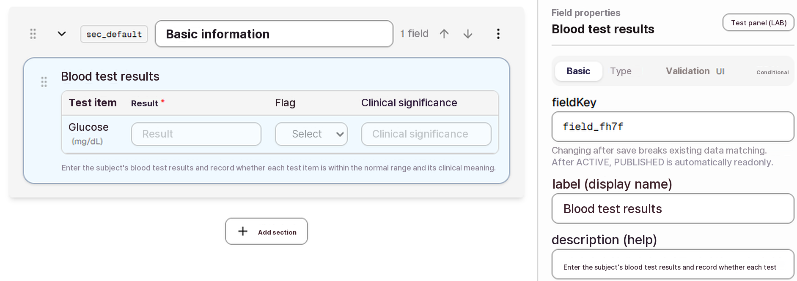
label (display name) — Enter the title to show above the table. The capture shows Blood test results.
Shown as the table title on the canvas. It is a different layer from the test item names and column names — those two are set separately in the Type settings tab. 3.2 · 3.5
description (help) — Enter the supporting description to show below the table. If left blank, nothing is shown.
Shown in gray text below the table. The capture shows “Enter the subject's blood test results and record whether each test item is within the normal range and its clinical meaning.”
fieldKey — The key under which the whole table is stored. It is assigned automatically when the field is added, like field_fh7f, and as the on-screen notice says, “Changing after save breaks existing data matching”.
Precautions
Must check Data corruption · Form cannot be completed
- • State the test time point in the display name. “Blood test results” alone does not tell whether it is a screening or a follow-up test — this matters especially when the same form is used at several visits.
- • Use the help to say where to record the blood draw date. As a rule, the test date is recorded in a date field of the form, not inside this table, and this is mandatory if you use auto-flagging. 3.7
- • Do not change fieldKey after saving. The link to data already entered is broken, and the validation rules 4.3 · conditional display Ch. 6 · auto-flag setup 3.7 that reference this field break as well.
Easily misunderstood behavior
- • The display name (label) can be changed at any time. It does not affect stored values.
2.2Required
Overview
Sets whether this table must be filled for the form to be completed. A Test panel has one allowance that other containers do not — rows that were never touched are not counted as incomplete. So you can record a situation where only some tests were performed as it is.
Screen guide
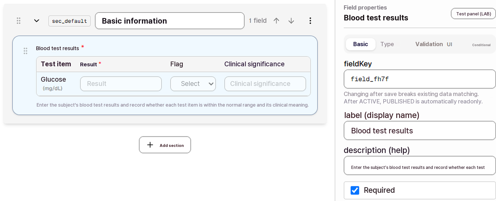
* next to the display name on the canvasRequired — When selected, this table becomes a required item. If not a single row has actually been entered, the form cannot be completed.
A red * appears to the right of the table title on the canvas. The asterisk on each column is set separately in 3.5.
label · description — The values entered in 2.1 are shown as is.
Precautions
Must check Data corruption · Form cannot be completed
- • ⛔ Every row with even one cell touched is checked. If you enter only the Result and leave a required column empty, that row stays incomplete — leave rows you will not use with nothing entered at all. 3.5
- • ⛔ There is no way to mark “not tested”. This type cannot turn on the not-measured declaration, so if you need to record whether a test was performed, put a yes/no question before it and link the table conditionally, or leave a note in a display-only column. 3.5 · Ch. 6 · 7.2
Easily misunderstood behavior
- • Rows with every column empty are not checked. If only three of seven items were performed, the form is completed even with the other four rows left empty — a Test panel needs this allowance because its rows are laid out in advance. 3.6
- • Hidden fields are excluded from the required check. While hidden by conditional display Ch. 6, the form is completed with the field empty even if it is required.
2.3SDV target (CRA source data check)
Overview
SDV (Source Data Verification) is the procedure in which the clinical research associate (CRA) checks entered values against the site's source data. A Test panel holds data with a clear source (lab reports), so it is the type where SDV is most useful. This setting is the same for all field types, so the screen is also the same regardless of type.
Screen guide

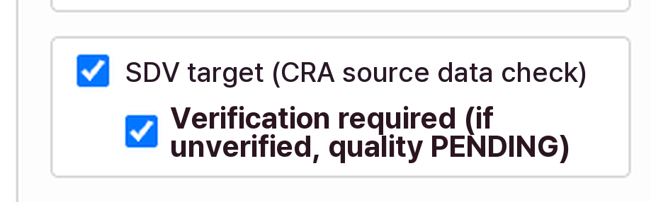
SDV target (CRA source data check) — When selected, this field is included in the CRA's check list. It is set for the whole table; it cannot be set separately per test item or per column.
When it becomes selected, the sub-item is enabled.
Verification required (if unverified, quality PENDING) — Can be set only after ① is selected. When selected, the quality status of the data stays at PENDING until the CRA finishes the check.
Before ① is selected, ② is grayed out and disabled. As the on-screen notice says, “Set the field as a verification target first to choose whether verification is required.”
Precautions
Must check Data corruption · Form cannot be completed
- • ⛔ Values with an auto-flag are also checked. The flag the system writes is only a result calculated with the normal range at that time, and it may differ from the flag on the lab report — the CRA must compare it with the source data. 3.7
- • ⛔ The unit must be checked as well. The system does not check units — a value the lab reports in
mg/dLis saved as is even if entered in ammol/Lbox. 3.3
Easily misunderstood behavior
- • Changing a value clears the verification. Correcting even one cell in one row returns the quality status of the whole table to PENDING, and the CRA must check it again.
Note
- • The quality status progresses in the order PENDING → VERIFIED → CLEAN. If even one field marked verification required is unverified, the data cannot become CLEAN.
Type settings tab — two-axis setup and auto-flagging
- 3.1Type settings tab layout
- 3.2Test items — card structure
- 3.3Adding a test item
- 3.4Completed test items
- 3.5Input columns
- 3.6Loading a standard panel
- 3.7Normal range auto-flag — setting the three slots
- 3.8Normal range auto-flag — flag value mapping and saving
3.1Overall layout
Overview
The largest tab in a Test panel. The two axes are authored in separate nested tabs — test items (the table's rows) and input columns (the table's columns). Load standard panel sits above them and the normal range auto-flag setup below, so one tab holds four blocks.
Screen guide
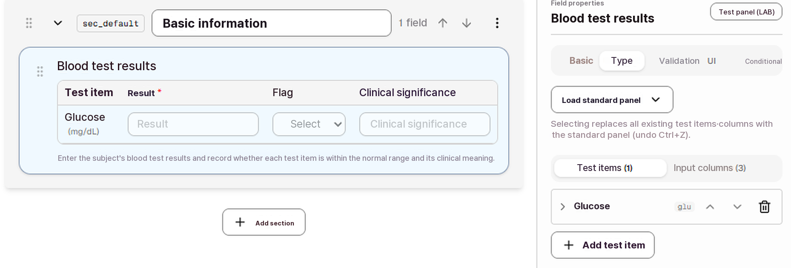
Load standard panel — Brings in a frequently used set of tests at once. 3.6
2 nested tabs — Test items (N) and Input columns (N). The number in parentheses is the current count. If there is a key format error, a ⚠ count badge appears next to the tab name, so you can see errors on the hidden tab too.
Test item card — When collapsed, only the display name and the itemCode badge are shown. Use ∧ ∨ to reorder and 🗑 to delete. 3.2
[+ Add test item] — Adds more test items. 3.3
Preset notice — “Selecting replaces all existing test items·columns with the standard panel (undo Ctrl+Z).” ⚠ It is a replacement, not an addition. 3.6
The default setup (1 glucose row × 3 columns) is already drawn on the canvas. Changes to the settings are reflected immediately. 1.1
Type badge “Test panel (LAB)” — The type of the field being set up.
Precautions
Must check Data corruption · Form cannot be completed
- • ⛔ Do not save with key errors left in place. itemCode · fieldKey are snake_case starting with a lowercase letter and cannot be duplicated. If the ⚠ on the tab badge does not disappear, saving is refused. 3.3 · 3.5
Easily misunderstood behavior
- • The “Normal range auto-flag setup” block continues below this tab. The capture shows only the top; that block is covered separately in 3.7 · 3.8.
- • There is no Default value (defaultValue) item. The table's value spans several rows, so no way to prefill it is provided. 7.2
- • There is no Auto calculation (calculation) item either. Computing the whole table into a single number does not work — if you need a calculation from test values, add a separate Number field. 7.2
3.2Test items — card structure
Overview
One test item is one row of the table. Expanding the card shows three boxes — itemCode (code for storage) · itemLabel (display name on screen) · unit. ⚠ There is no box for the normal range — because it differs by site, it is authored separately on another screen.
Screen guide
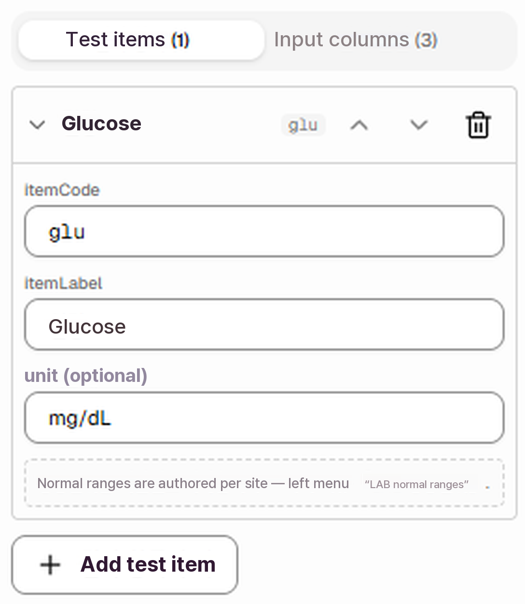
Collapse · expand — When a card is collapsed, only the display name and the itemCode badge remain, so you can scan many items at a glance.
itemCode — The code used for storage and export. The capture shows glu. It must be snake_case starting with a lowercase letter and cannot be duplicated within one table.
itemLabel — The name shown in the row header of the table. The capture shows Glucose.
unit (optional) — The unit. The capture shows mg/dL, which appears in the row header in small text below the display name. ⚠ This box appears only when there is a number column. 3.5
[+ Add test item] — Adds more items. 3.3
Nested tabs — The Test items tab is open now. To change the columns, switch to the Input columns tab. 3.5
Notice — “Normal ranges are authored per site — left menu “LAB normal ranges””. Normal ranges are authored not here but on that screen, by site × sex × age.
Precautions
Must check Data corruption · Form cannot be completed
- • ⛔ Do not write the normal range in the display name or unit box. Written like
Glucose (70-110), it is visible on screen but auto-flagging does not read it — it is just a long name. 3.7 - • ⛔ Always enter the unit. The system does not check units, so if no unit is written, a value the recorder enters in a different unit is not caught. 2.3
- • Finalize itemCode before publishing. If you change it after saving, only that row's values lose their link — the table remains with just one row empty, which is hard to notice. 2.1
Easily misunderstood behavior
- • itemCode becomes a column name in the exported data. Following standard codes (e.g. the
GLUCfamily of CDISC LB) makes it easier to merge data — but the lowercase snake_case rule must still be followed.
3.3Adding a test item
Overview
When you add an item, the new card is created already expanded. All three boxes are empty, and the glu · Glucose · mg/dL shown in them are only input examples (faint text), not saved values. ⚠ They have the same text as the first item's values, so it is easy to mistake them for filled-in values — take care.
Screen guide
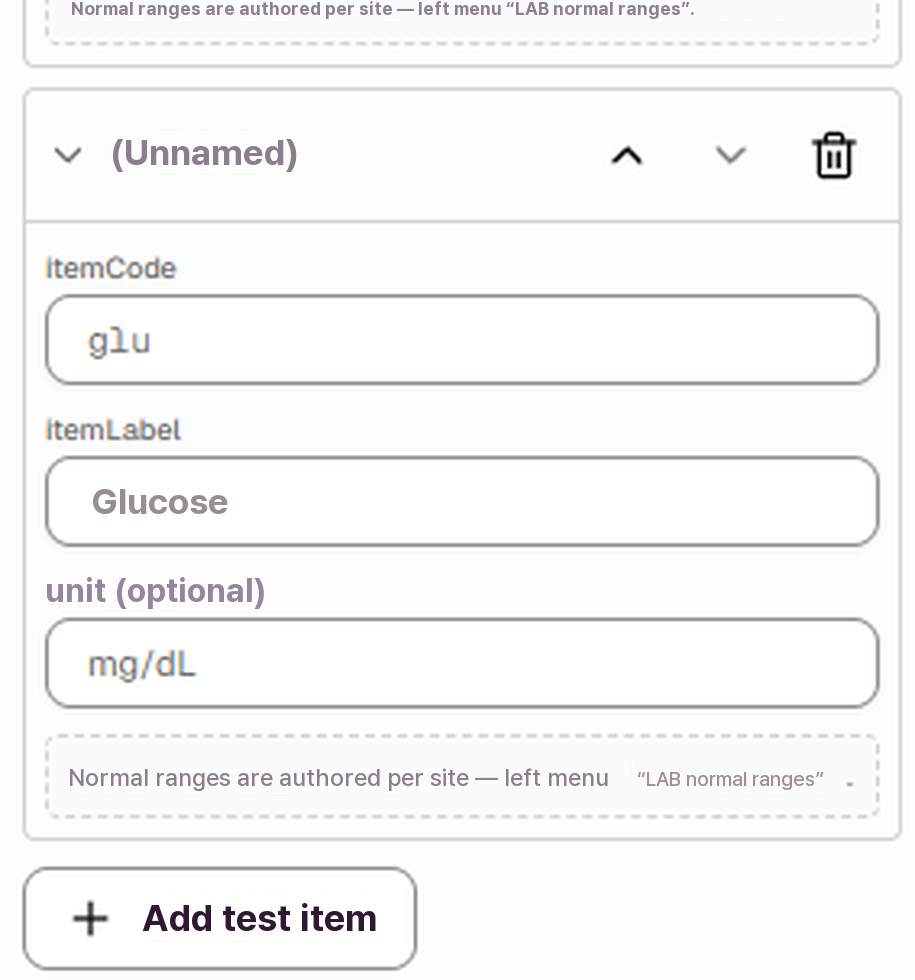
[+ Add test item] — Each press adds one empty card.
The new card is created as “(Unnamed)” and expands automatically. When you enter a display name, the name appears there.
itemCode — Empty. The faint glu is example text.
itemLabel — Empty. The faint Glucose is example text.
unit (optional) — Empty. The faint mg/dL is example text.
The normal range notice appears on the new card as well — meaning each item's range is authored separately on the “LAB normal ranges” screen. 3.2
Precautions
Must check Data corruption · Form cannot be completed
- • ⛔ Do not leave empty cards. itemCode and itemLabel must be filled in, and saving with them empty is refused. Delete cards you will not use with 🗑. 3.2
- • ⛔ Do not mistake the faint text for values. Example text is not saved — if left as is, a row without a name is created.
Easily misunderstood behavior
- • If itemCode is duplicated, a warning appears on the spot. “Duplicate key” or “snake_case (lowercase start) required” is shown below the box, so you can fix it before saving. 3.1
- • The item order is the row order of the table. Keeping the same order as the lab report makes it easier for the recorder to transcribe — you can change it later with ∧ ∨. 3.2
3.4Completed test items
Overview
When the three boxes are filled in, a row is added to the canvas immediately. The capture shows “WBC” added as the second item — the row header shows the display name together with the unit, and the column setup (Result · Flag · Clinical significance) applies identically to every row.
Screen guide
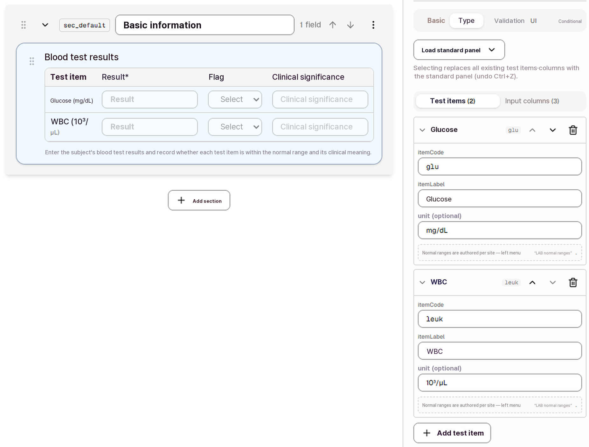
itemCode — leuk was entered.
itemLabel — WBC was entered.
A “WBC” row is added to the canvas.
unit — 10³/µL was entered.
The unit is attached in small text below the display name in the row header.
[+ Add test item] — Repeat the same steps if you need more. 3.3
Test items (2) — The number in the tab name changed from 1 to 2.
The first item (Glucose) card stays as it is. Adding items does not change existing items — everything is replaced only when you load a standard panel. 3.6
Precautions
Must check Data corruption · Form cannot be completed
- • ⛔ Include every test item to be collected. The recorder cannot add rows — items not listed here cannot be recorded at all. 1.1
- • ⛔ Do not include items that will not be performed. Rows are laid out in advance, so many unused items make it hard for the recorder to tell what to fill in. 2.2
Easily misunderstood behavior
- • Collapse the cards when there are many items. In the collapsed state only the display name and code are shown, so the whole setup is easy to scan. 3.2
- • Units differ by item. As in the capture, glucose is
mg/dLand WBC is10³/µL— do not try to unify them within one table.
3.5Input columns
Overview
Input columns are the table's columns, and they apply identically to every test item. The default setup has three columns — Result · Flag · Clinical significance. Each column is a small field, so its input method · storage key · name · required setting are set separately. Unlike test items, columns are usually left as they are.
Screen guide
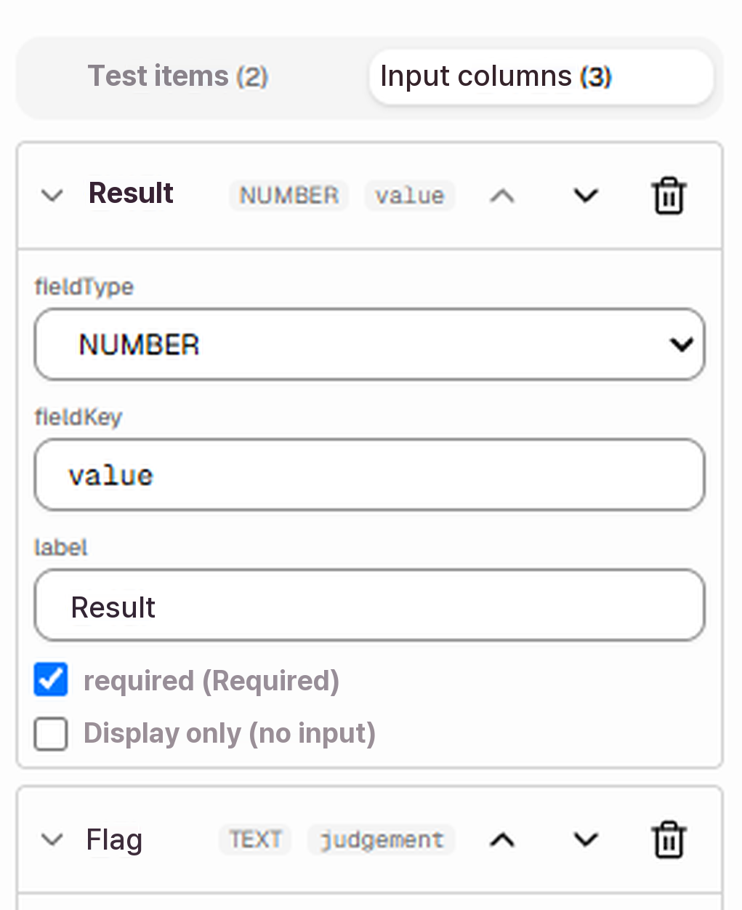
fieldType — The input method of the column. Choose from 5 types — TEXT · NUMBER · SELECT · DATE · BOOLEAN. The Result must be NUMBER for numeric comparison and auto-flagging. 3.7
fieldKey — The storage key of the column. The capture shows value, and the same lowercase snake_case rule and no-duplicates rule apply. 3.2
label — The table header. On the entry screen the same value is also used as the hint text inside the cell. 5.4
required (Required) — Sets whether the column must be filled in. In the capture only the Result is required.
Display only (no input) — A column that takes no value and shows fixed text set for each test item (specimen type · test method, etc.). ⚠ It cannot be set together with required, and it cannot be used as the measurement column or flag column of auto-flagging. 3.7
The Flag · Clinical significance cards and [+ Add column] continue below. ⚠ In the capture the Flag column has been changed to TEXT — in the default setup it is Select (SELECT) with two options, Normal · Abnormal.
Precautions
Must check Data corruption · Form cannot be completed
- • ⛔ Do not leave the Result column as TEXT. If it is not a number, neither auto-flagging nor numeric comparison works, and values like
5.2 or lesscome in as they are. 3.7 - • ⛔ Do not add columns carelessly. Columns are attached identically to every test item — adding a box needed by only one item creates a string of empty boxes in the other rows. 5.2
Easily misunderstood behavior
- • To keep the Flag column as a choice type, you must extend its options. To use auto-flagging as well, the options must include all three: Normal · Low · High — the default two, Normal · Abnormal, cannot turn on auto-flagging. 3.8
- • Display-only columns are for laying out fixed notes. They suit content that is set per item and that the recorder never changes, such as specimen type — they take no value, so they are also excluded from checks. 2.2
3.6Loading a standard panel
Overview
A feature that brings in a frequently used set of tests at once. The capture shows the basic metabolic set loaded, with seven items — sodium · potassium · chloride · blood urea nitrogen · creatinine · glucose · calcium — added all at once. ⚠ It does not add to the existing setup but replaces it entirely, so use it first, when you start authoring.
Screen guide
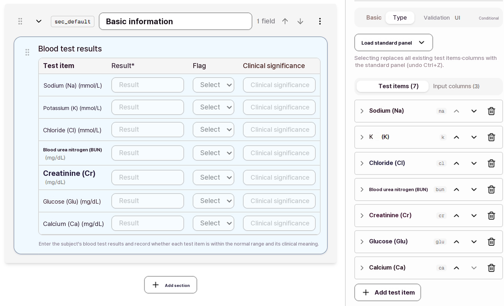
Load standard panel — Choosing a set from the list applies it immediately.
The test item cards are replaced with 7 cards. Each item has its code · display name · unit already filled in.
7 rows are drawn on the canvas all at once too. The column setup stays the same.
Test items (7) — The count has changed. Input columns (3) stays the same.
Notice — “Selecting replaces all existing test items·columns with the standard panel (undo Ctrl+Z).” ⚠ It states that columns are replaced too.
Precautions
Must check Data corruption · Form cannot be completed
- • ⛔ Do not load one after careful authoring. Not only the test items but also the input columns are replaced entirely — the column setup you built is lost as well. 3.5
- • If you loaded the wrong one, press Ctrl+Z right away. As the on-screen notice says, it can be undone, but after other work, undo also cancels that work, so it is safer to act immediately.
Easily misunderstood behavior
- • After loading, adjust it to the study. The standard set is only a starting point, and deleting items that will not be performed with 🗑 makes things clearer for the recorder. 3.4
- • Check that units and codes match the study standard. If the lab reports in a different unit, the unit box must be corrected — the system does not check units. 2.3 · 3.2
3.7Normal range auto-flag — setting the three slots
Overview
A feature that compares test values with the normal range and writes the flag automatically. This setting exists only for a Test panel, and to use it you must set three things — which column's value to read, which column to write the flag in, and the age as of when to use to choose the range. The normal ranges themselves are not here but on the “LAB normal ranges” screen.
Screen guide
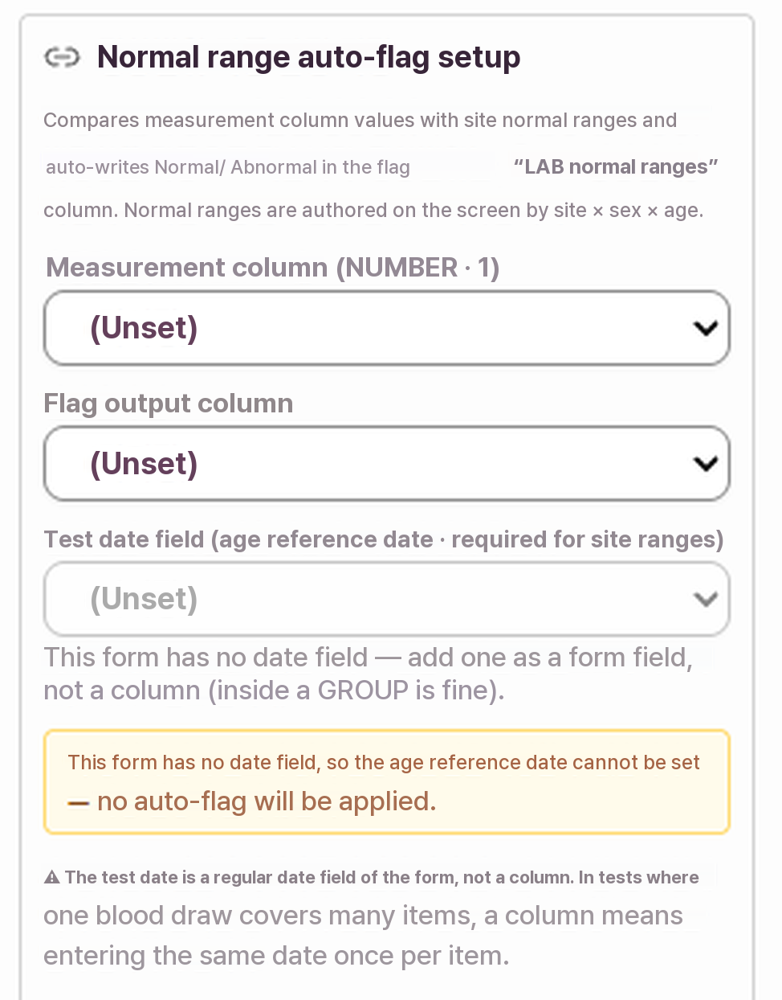
Measurement column (NUMBER · 1) — The column the flag is based on. Only number columns can be chosen, and display-only columns are excluded. 3.5
Flag output column — The column where the flag result is written. A text column or a choice column can be chosen.
Test date field — The reference date for calculating age. ⚠ You choose a date field in the form, not a column of the table. In the capture there is no such field, so it is disabled.
Block title “Normal range auto-flag setup” — with a 🔗 icon.
Notice — “Compares measurement column values with site normal ranges and auto-writes Normal/Abnormal in the flag column. Normal ranges are authored on the “LAB normal ranges” screen by site × sex × age.”
⚠ Warning — “This form has no date field, so the age reference date cannot be set — no auto-flag will be applied.” In this state not a single flag is applied.
⚠ Notice — “The test date is a regular date field of the form, not a column. In tests where one blood draw covers many items, a column means entering the same date once per item.”
Precautions
Must check Data corruption · Form cannot be completed
- • ⛔ Without a test date field, auto-flagging does not work at all. Normal ranges are authored by age group, so without the age the range cannot be chosen — to use auto-flagging, add a date field to the form first.
- • ⛔ Do not make the test date a column of the table. If one blood draw runs seven items, the same date would be entered seven times — that is why columns are excluded from the candidates entirely. A date field can be chosen even if it is placed inside a field group. 3.6
Easily misunderstood behavior
- • Normal ranges are not on this screen. They are authored by site · sex · age on the “LAB normal ranges” screen; here you only specify which columns to use. 3.2
- • Auto-flagging is optional. If you do not use it, leave the three slots as (Unset), and the recorder enters the flag directly. 3.5
3.8Normal range auto-flag — flag value mapping and saving
Overview
Once the slots are chosen, flag value mapping and [Save setup] follow below. Mapping converts the flag tokens the system uses (NORMAL · LOW · HIGH) into the values this form uses. ⚠ However, the capture shows the wrong flag output column chosen — read the explanation and precautions below.
Screen guide
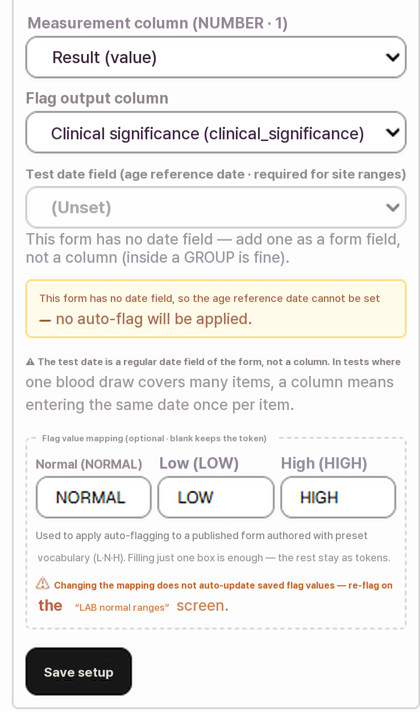
Measurement column = Result (value) — The correct choice. It must be a number column. 3.5
Flag output column = Clinical significance (clinical_significance) — ⚠ This is the wrong part. Clinical significance is a box where the recorder writes freely, and auto-flagging overwrites that text. The correct target is the “Flag” column.
Flag value mapping (optional) — Three boxes: Normal (NORMAL) · Low (LOW) · High (HIGH). If left blank, the system token is saved as is; if filled in, the value is converted to what you enter before saving (e.g. if the Flag column options are N·L·H, enter those).
[Save setup] — ⚠ It is separate from saving the form. The auto-flag setup is saved only when you press this button.
Notice — “Used to apply auto-flagging to a published form authored with preset vocabulary (L·N·H). Filling just one box is enough — the rest stay as tokens.”
⚠ Warning — “Changing the mapping does not auto-update saved flag values — re-flag on the “LAB normal ranges” screen.”
Precautions
Must check Data corruption · Form cannot be completed
- • ⛔ Do not choose a free-text box as the flag output column. The system accepts any text column and does not block it, but the moment an auto-flag is written, the findings the recorder wrote are lost. Choose the “Flag” column.
- • If the Flag column is a choice type, its options must include all three. If any of Normal · Low · High is missing, the setup is refused — the default two, Normal · Abnormal, cannot turn it on. 3.5
- • ⛔ It is not applied unless you press [Save setup]. Saving the form does not save this setup separately — be sure to press it before leaving the screen.
Easily misunderstood behavior
- • Changing the mapping leaves past values unchanged. To align flags already saved, you must re-flag on the “LAB normal ranges” screen.
Validation tab — checking values before saving
- 4.1No validation rules
- 4.2Adding a rule
- 4.3Completed rule — Compare with another field
4.1No validation rules
Overview
The tab that collects rules checking whether values meet conditions before saving. For a Test panel this tab has a narrow scope of use — the table's value is a bundle of several rows, so size or format checks do not work. If you want to limit the range of test values, use “LAB normal ranges” and auto-flagging instead of this tab. 3.7
Screen guide
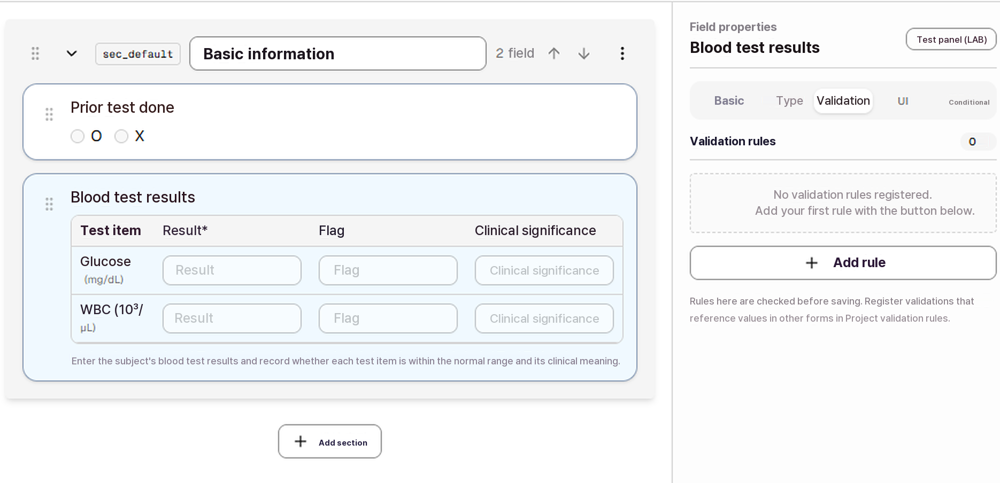
[+ Add rule] — Creates the first rule. The screen after selecting it is explained in 4.2.
The Validation rules area and the number of registered rules. Initially it is 0 items.
When there are no rules, the notice “No validation rules registered. Add your first rule with the button below.” is shown.
Notice at the bottom — “Rules here are checked before saving. Register validations that reference values in other forms in Project validation rules.”
Precautions
Must check Data corruption · Form cannot be completed
- • ⛔ Column-level checks cannot be created in this tab. There is no place for a rule like “Result must be greater than 0” — the rules in this tab treat the whole table as one value. All you can control per column is the input method and required. 3.5
- • ⛔ Validations that reference values in other forms cannot be created here. Register such rules on the “Project validation rules” screen — but even on that screen, a Test panel cannot be chosen as a reference target. 7.2
Easily misunderstood behavior
- • Handle the acceptable range of test values with auto-flagging. Unlike blocking with validation rules, auto-flagging can use different ranges by site · sex · age, and values outside the range are still recorded while being marked abnormal. 3.7
- • The capture has two top-level fields: “Prior test done” (single choice) and “Blood test results” — whether the table is collected depends on the answer to the first field, so in 4.3 a rule linking the two fields is created.
4.2Adding a rule
Overview
Selecting [+ Add rule] in 4.1 creates a Rule 1 block. Initially “Value range” is set, but the table's value is a bundle of rows, so size comparison does not work. Change it to “Compare with another field” — it is the only kind that works for a table. 4.3
Screen guide
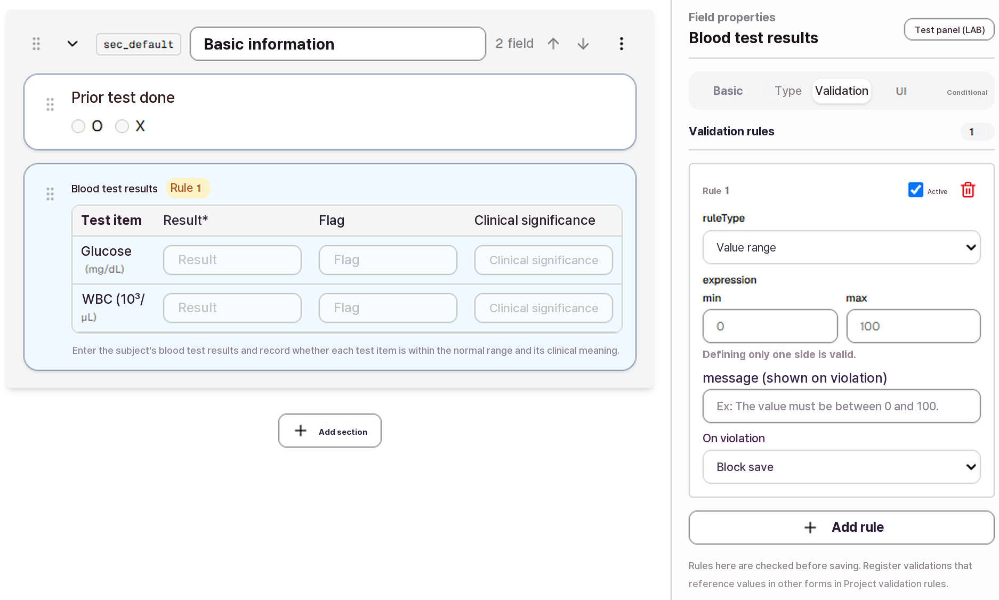
[+ Add rule] — Creates one more rule. (It is the same button you selected in 4.1.)
A “Rule 1” badge appears next to the table title on the canvas.
The number of rules changes to 1 item.
Active checkbox and Delete icon — You can pause a rule without deleting it.
ruleType — The kind of rule. Right after creation it is “Value range”, so be sure to change it to “Compare with another field”.
min — The lower-limit box that appears when Value range is chosen.
max — The upper-limit box that appears under the same condition.
message (shown on violation) — The message shown to users when the rule is violated.
On violation — Select either Block save or Warning. (Depending on ruleType, it may not be selectable — 4.3)
The faint 0 · 100 and “Defining only one side is valid.” are guidance for Value range, not set values.
Precautions
Must check Data corruption · Form cannot be completed
- • ⛔ Do not enter the normal range of test values here. min · max treat the whole table as one value, and since the table is not a number, nothing happens — no error is shown either, so you move on believing a rule is in place. Handle ranges with auto-flagging. 3.7
- • ⛔ Applying “Format (regex)” to a table blocks saving permanently. The regex is checked after the whole bundle of rows is converted into a fixed internal string, so whatever pattern you apply, entering even one value causes a violation.
- • ⛔ “Decimal places” does not work either. Even if you want to limit the decimals of test values, this tab cannot reach the columns. 4.1
- • If message is left blank, users cannot tell why saving was blocked. Be sure to enter it.
4.3Completed rule — Compare with another field
Overview
Changing ruleType to Compare with another field checks the value against the value of another field in the same form. It can express relationships such as “collect the results only if a prior test was reported as done”, and it is the only rule that works properly for a table. ⚠ Note the number of items in the on-screen notice — it reveals the nature of this type.
Screen guide
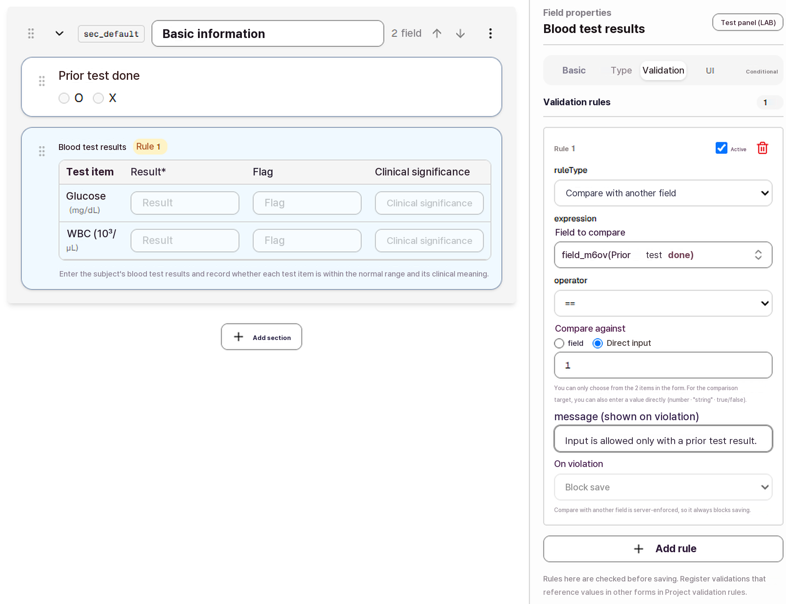
1ruleType = Compare with another field — When selected, the boxes below change for comparison.
Field to compare — The capture uses field_m6ov(Prior test done). ⚠ Do not choose the table itself.
operator — The comparison method. The capture shows == (equals).
Compare against — Select either Field or Direct input. The capture uses direct input with 1 — the stored value of “Prior test done”.
message (shown on violation) — The capture shows Input is allowed only with a prior test result.
On violation — It is grayed out and disabled. As the on-screen notice says, “Compare with another field is server-enforced, so it always blocks saving.”
On-screen notice — “You can only choose from the 2 items in the form.” ⚠ There are two top-level fields and it says 2 — the table's columns are not among the candidates. 7.1
Precautions
Must check Data corruption · Form cannot be completed
- • ⛔ Do not choose the table itself as the field to compare. The table's value is a bundle of rows and can never equal
1, so entering even one value causes a violation and saving is blocked permanently. - • ⛔ For the comparison target, enter the stored value, not the text on screen. “Prior test done” appears as
O·Xon screen, so first check in that field's option list that the stored value really is1. - • The same relationship can also be built with conditional display 6.2. Applying both creates a redundancy that blocks saving even though the question is never asked, so use only one. 6.1
Easily misunderstood behavior
- • The table's columns cannot be referenced from other fields. Columns exist only inside the table, so they do not appear in the lists for validation rules and conditional display — in contrast to field group members, which do appear in the lists. 7.1
UI tab — screen layout and guidance text
- 5.1UI tab layout
- 5.2Layout width
- 5.3Read-only · hidden
- 5.4placeholder · helpText
5.1Overall layout
Overview
A tab that sets how the field is laid out and guided on screen, not the value itself. Settings in this tab do not change the stored data itself. For a Test panel, Layout width is especially important — it is a table with four or more columns, so it is the first to break down when the width is reduced. 5.2
Screen guide
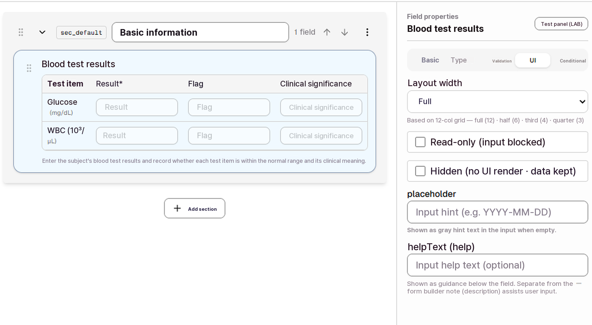
Layout width — The width this table takes up in one row of the form. 5.2
Read-only (input blocked) — Shows the field but prevents changes. 5.3
Hidden (no UI render · data kept) — Hides the field from the screen. The whole table disappears. 5.3
placeholder — Does not apply to a Test panel. The hint text in the cells is the column name as is, so it cannot be changed here. 5.4
helpText (help) — Guidance text shown below the table. This one works normally. 5.4
Type badge “Test panel (LAB)”
Precautions
Must check Data corruption · Form cannot be completed
- • ⛔ Entering text in placeholder does not change the screen. The “Result” · “Flag” · “Clinical significance” shown in the cells are column names — to change them, edit the column label in the Type settings tab. 3.5 · 5.4
- • ⛔ Hidden does not delete stored values. It only hides the table on screen; the values remain and are included in exports and the audit trail. 5.3
Easily misunderstood behavior
- • Settings in this tab do not change stored values. Only the layout and guidance change.
Note
- • Do not use Read-only and Hidden together. Hidden takes precedence, so the Read-only setting has no effect. 5.3
5.2Layout width
Overview
Sets the width this table takes up in one row of the form. A Test panel has at least four boxes — the test item column + 3 input columns — so it is more sensitive to width than any type covered so far.
Screen guide
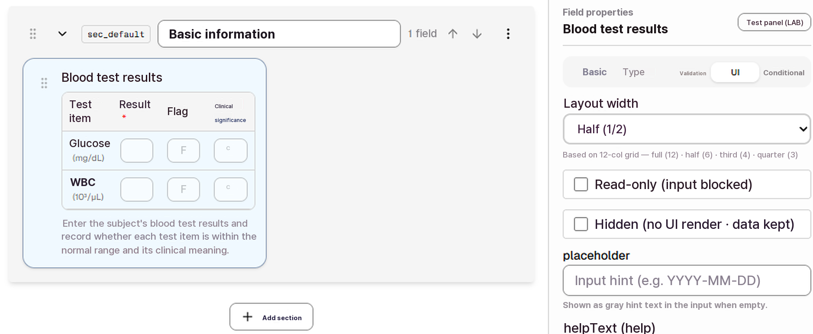
Layout width — Select from Full · Half (1/2) · 1/3 · 1/4.
As the table shrinks to half width, all headers wrap onto two lines and the cell hint text is cut to a single character, like F · C. There is no way to tell what each box is.
Based on 12-col grid — As the on-screen notice says, “full (12) · half (6) · third (4) · quarter (3)”. The table divides this width again by the number of columns, so the effective width is much narrower.
Precautions
Must check Data corruption · Form cannot be completed
- • ⛔ Always keep a Test panel at full width. At half width the cell text is already cut to one character — at 1/3 · 1/4 it becomes unusable as a table.
- • ⛔ The more columns you add, the sooner it breaks down. With display-only columns added and five or more columns in total, it can get cramped even at full width, so keep only the columns you really need. 3.5
Easily misunderstood behavior
- • Only the hint text is cut off; the boxes still work. Input and saving work correctly — it just looks narrow, which makes it all the harder to notice.
Note
- • If not set, full width is applied.
5.3Read-only · hidden
Overview
Settings that show the table but prevent changes, or hide it on screen while keeping the values. Neither deletes stored values, and both apply to the whole table — there is no setting that locks or hides only specific test items or columns.
Screen guide
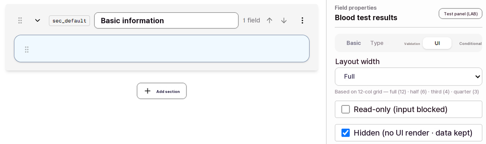
Read-only (input blocked) — When selected, the table is shown but the recorder cannot change it. All rows and columns are locked.
Hidden (no UI render · data kept) — When selected, this table is not shown on the entry screen.
Only an empty border remains of the canvas card. Neither the title nor the table is shown.
Layout width — The value set in 5.2.
Precautions
Must check Data corruption · Form cannot be completed
- • ⛔ Do not cover wrongly entered test values with Hidden. The values remain and are included in exports and the audit trail — if a value needs fixing, correct the value instead of hiding it. 4.3
- • ⛔ Hiding a table with auto-flags also hides the flags. The values and flags remain, but the recorder cannot see them, so hiding it depending on the situation with conditional display is better. 3.7 · Ch. 6
Easily misunderstood behavior
- • Read-only is useful for showing external test results. It suits cases where values received from the lab system are only to be checked — do not use it on forms where the recorder transcribes values directly.
Note
- • If Hidden and Read-only are both selected, Hidden takes precedence.
5.4placeholder · helpText
Overview
Sets the guidance text to go inside and below the input box. For a Test panel the two items go separate ways — helpText works normally, but placeholder does not apply. The capture is the proof.
Screen guide
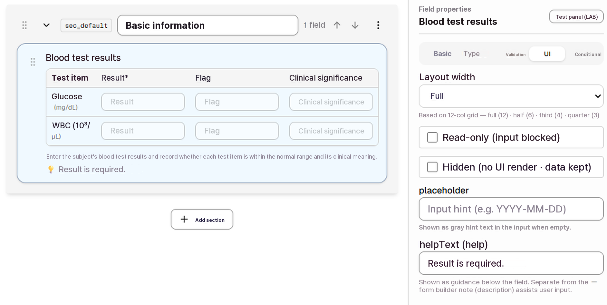
placeholder — Faint text shown in the input box when there is no value. In the capture it is blank, and only the hint “Input hint (e.g. YYYY-MM-DD)” is visible.
Even so, the table cells already show “Result” · “Flag” · “Clinical significance”. This text is not the placeholder but the column name (label) used as is; to change it, edit the column label in the Type settings tab. 3.5
helpText (help) — Guidance text shown below the table. The capture shows “Result is required.”
It is shown below the table with a 💡 icon. This one works normally.
description (help) — The text entered in 2.1. It is a different item from helpText and is shown on the line above without an icon.
Precautions
Must check Data corruption · Form cannot be completed
- • ⛔ Text written in placeholder is not shown anywhere. The cell hint is the column name and cannot be changed with this box — if you write it here, the guidance you believe you set never reaches the recorder. 5.1
- • Put unit guidance in the unit box of each test item. Units differ by item, so helpText, which applies to the whole table, cannot convey them. 3.2
Easily misunderstood behavior
- • Put guidance for the whole table in helpText. Writing “Result is required.” as in the capture reads as guidance for every row — since it cannot be enforced by validation 4.1 · 4.2, this text is the only means of control.
- • description and helpText are shown together. If you enter both, they make two lines, so do not write the same content twice. 2.1
Conditional tab — showing a field based on another value
- 6.1Enabling conditional display
- 6.2Setting the condition
6.1Enabling conditional display
Overview
A feature that shows or hides this table depending on the value of another field. It suits a Test panel especially well — because visits where tests are not performed are common. If you ask whether the test was performed first and link the table to that answer, you can tell an empty table from a missing entry. 2.2
Screen guide
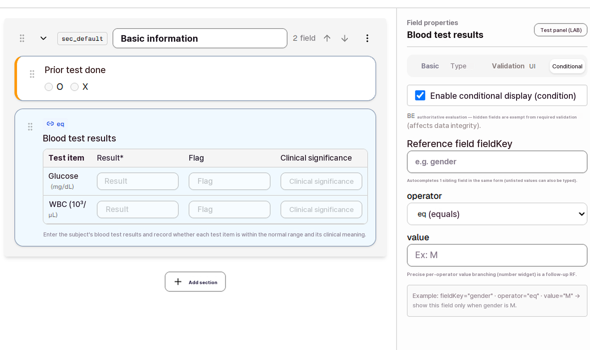
Enable conditional display (condition) — When selected, the condition settings below appear.
A 🔗 eq badge appears above the table on the canvas to show that a condition is applied.
Reference field fieldKey — Another field in the same form on which the condition is based. ⚠ As the on-screen notice states, “Autocompletes 1 sibling field in the same form”, the table's columns are not among the candidates. 4.3
operator — The comparison method. The default is eq (equals).
value — The value to compare. Enter the stored value of the reference field. 6.2
⚠ On-screen notice — “Hidden fields are exempt from required validation (affects data integrity).” The condition is evaluated by the system.
Example at the bottom — fieldKey="gender" · operator="eq" · value="M" → show this field only when gender is M.
Precautions
Must check Data corruption · Form cannot be completed
- • ⛔ Setting a condition exempts the field from required validation. While hidden because the condition is not met, the form is completed with the table empty even if it is required. 2.2
- • ⛔ If the condition becomes false after values have been entered, the table disappears from the screen. The values remain, so if the answer to the earlier question is changed later, the remaining values must be deleted separately. 5.3
Easily misunderstood behavior
- • Do not ask for the table at visits where the test is not performed. If you put a yes/no question before it and make this table conditional on it, the table is not shown at visits where it does not apply, so you can tell an empty table from a missing entry. 2.2
Note
- • If you enable the condition and leave the reference field blank, the condition is never met. Be sure to fill in all of ②–④. 6.2
6.2Setting the condition
Overview
The condition enabled in 6.1, fully entered. With this setting, the table is shown only when the value of “Prior test done” is 1. It uses the same reference field as the validation rule in 4.3, but instead of blocking saving, it does not ask at all.
Screen guide
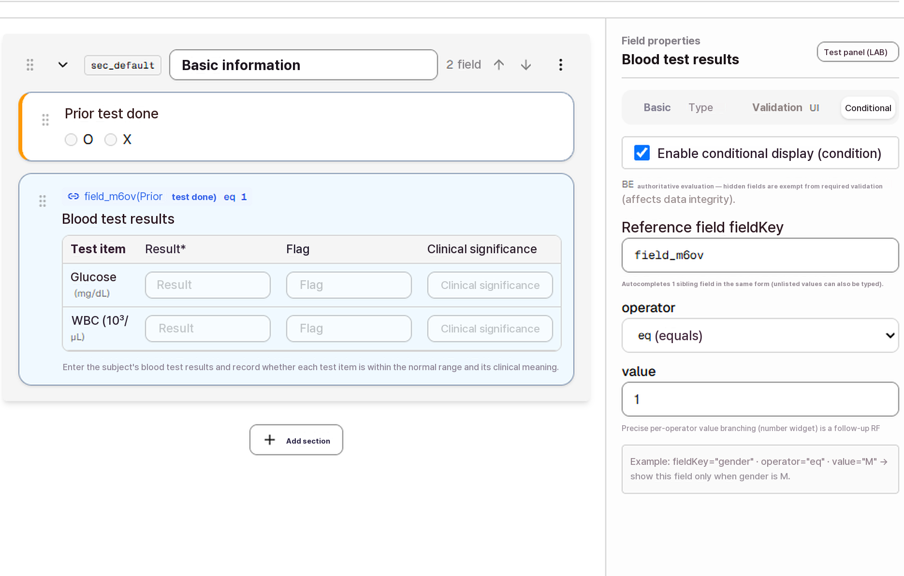
Prior test done is 1Reference field fieldKey = field_m6ov — Points to the “Prior test done” field in the same form. It is the same field as in the validation rule in 4.3.
Result of entering all of ①–③ — the canvas badge becomes specific: 🔗 field_m6ov(Prior test done) eq 1.
operator = eq (equals)
value = 1 — Enter the stored value of the option, not the O shown on screen.
⚠ On-screen notice — “Hidden fields are exempt from required validation (affects data integrity).”
Example at the bottom — fieldKey="gender" · operator="eq" · value="M" → show this field only when gender is M.
Precautions
Must check Data corruption · Form cannot be completed
- • ⛔ For value, enter the stored value, not the text on screen. If you enter
Obecause “Prior test done” appears asO·Xon screen, the condition is never met and the table is never shown. First check the stored value in the option list of the field you reference. - • ⛔ Changing the stored value of the reference field silently breaks the condition. If the stored value is changed from
1toY, this condition simply stops being met without any error — that is why changing stored values after publishing is risky.
Easily misunderstood behavior
- • Auto-flagging does not run while the table is hidden. There are no values, so this is natural, but if the condition later becomes true, flags are applied from the values entered from then on. 3.7
- • After setting it, check it in Preview. You must change the reference value back and forth and confirm that the table actually appears and disappears.
Appendix
- 7.1Settings by tab at a glance
- 7.2Must remember · not covered
7.1Settings by tab at a glance
Settings by tab
| Tab | Item | What it sets | Section |
|---|---|---|---|
| Basic | fieldKey | One key under which the whole table is stored (do not change after saving) | 2.1 |
| label (display name) | Title shown above the table — make the test time point clear | 2.1 | |
| description (help) | Help text below the table — say where to record the blood draw date | 2.1 | |
| Required | Whether at least 1 actually entered row is needed — untouched rows excluded | 2.2 | |
| SDV target | CRA source data check — the only step that checks auto-flags and units | 2.3 | |
| Type settings | Load standard panel | ⚠ Replaces items·columns entirely (only when starting to author) | 3.6 |
| itemCode | Storage code of the test item (snake_case · no duplicates · finalize before publishing) | 3.2 · 3.3 | |
| itemLabel · unit | Display name and unit in the row header — ⚠ units are not checked | 3.2 · 3.4 | |
| (Normal range) | ⚠ Not on this screen — in “LAB normal ranges”, by site × sex × age | 3.2 · 3.7 | |
| Column fieldType · fieldKey · label | Column input method · storage key · header (5 types: TEXT·NUMBER·SELECT·DATE·BOOLEAN) | 3.5 | |
| Column required · display only | Required or not · fixed-text column that takes no value (the two cannot be set together) | 3.5 | |
| Auto-flag — three slots | Measurement column (NUMBER) · flag output column · test date field (a date field of the form) | 3.7 | |
| Auto-flag — mapping · saving | NORMAL·LOW·HIGH to this form's values · ⚠ [Save setup] is separate | 3.8 | |
| Validation | ruleType | Only “Compare with another field” works — handle ranges with auto-flagging | 4.2 · 4.3 |
| Value range · format · decimal places | ⛔ Ineffective or blocks saving — do not use | 4.2 | |
| Field to compare | ⛔ Choosing the table itself blocks saving · columns are not candidates | 4.3 | |
| UI | Layout width | ⚠ Always Full — at half width the cell text is cut to one character | 5.2 |
| Read-only | Shown but cannot be changed — suits showing external results | 5.3 | |
| Hidden | Not shown on screen — stored values remain | 5.3 | |
| placeholder · helpText | ⛔ placeholder does not apply · only helpText works | 5.4 | |
| Conditional | Condition active | Do not ask at all at visits where the test is not performed (exempt from required validation) | 6.1 |
| Reference field fieldKey | Field in the same form on which the condition is based (columns are not candidates) | 6.2 | |
| operator · value | Comparison method and value to compare (enter the stored value) | 6.2 |
Comparing the 3 containers — what is fixed and what is open
| Item | Table type (GRID) | Field group (GROUP) | Test panel (LAB) |
|---|---|---|---|
| Initial state | Empty notice | Empty notice | Comes with a ready-to-use setup 1.1 |
| Who sets the rows | Recorder ([Add row]) | — (items fixed) | Author (test items) — the recorder cannot add more |
| Referencing sub-items | Columns not possible | Members possible | Columns not possible (“2 items” in the 4.3 notice) |
| Handling of empty rows | Empty rows are also incomplete | — | Untouched rows excluded — complete even if only some are performed 2.2 |
| Unique features | — | Items per row | Standard panel · auto-flagging · display-only columns (3.5–3.8) |
7.2Must remember · not covered
Must remember
Must check Data corruption · Form cannot be completed
- • To use auto-flagging, the form must have a date field. Normal ranges are by age group, so without a test date not a single flag is applied. 3.7
- • Do not choose a free-text box such as “Clinical significance” as the flag output column. The system does not block it, but the findings the recorder wrote are overwritten — choose the “Flag” column. 3.8
- • Auto-flagging is applied only after you press [Save setup]. It is a separate axis from saving the form. 3.8
- • Load standard panel replaces not only the test items but also the input columns entirely. Use it only when you start authoring. 3.6
- • The recorder cannot add rows. You must include every test item to be collected. 1.1 · 3.4
- • Units are not checked. Always fill in the unit box, and check that units match at the SDV step. 2.3 · 3.2
- • Keep Layout width at Full. At half width the cell text is already cut to one character. 5.2
- • Text written in placeholder is not shown anywhere. The cell hint is the column name, so edit the column label. 3.5 · 5.4
Easily misunderstood behavior
- • Normal ranges are not on this screen. They are authored by site · sex · age on the “LAB normal ranges” screen. 3.2 · 3.7
- • Untouched rows are not counted as incomplete. A situation where only some tests were performed can be recorded as it is. 2.2
- • Handle the range of test values with auto-flagging, not validation rules. Ranges by site·sex·age can be used, and values outside them are still recorded. 4.1
Note
- • The faint text on a card right after adding it is an example. It looks the same as the first item's values but is not saved. 3.3
Not covered in this document
※ “LAB normal ranges” screen (SCR-CRF-015) — A separate screen for authoring normal ranges by site × sex × age and running re-flagging. It is opened from the left menu and is outside the scope of this manual. 3.2 · 3.7 · 3.8
Allow not-measured declaration · AE semantic role — Not shown at all in the Basic tab. Because the value spans several rows, those two features do not apply. Handle tests not performed with conditional display. 1.1 · 6.1
Default value (defaultValue) · Auto calculation (calculation) — Not available in the Type settings tab. If you need a calculation from test values, add a separate Number field. 3.1
Entering fixed text for display-only columns — When a column is set to display only, you enter the text to show for each test item separately. The capture does not include that screen, so this manual covers only up to the checkbox. 3.5
Editing options of a choice-type Flag column — If the Flag column is set to Select (SELECT), an option list editor appears. In the capture the Flag column has been changed to text (TEXT), so that screen is not available, and this manual describes only the requirements in text. 3.5 · 3.8
Validations · conditions referencing columns — A column's fieldKey is valid only inside the table, so it cannot be referenced directly from other fields' validation rules or conditional display. 4.3 · 6.1
References in Project validation rules — On the “Project validation rules” screen, which looks at values in other forms, a Test panel cannot be chosen as a reference target. This is because its value is a bundle of rows. 4.1